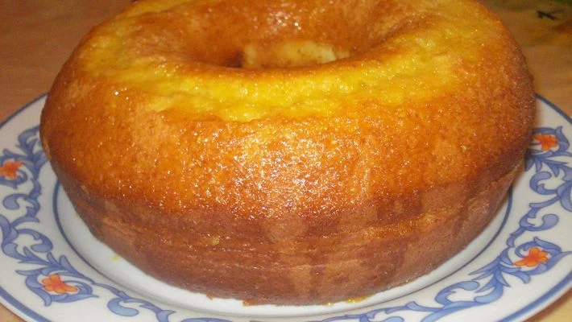

Bolo de Laranja

Ingredientes:
4 ovos
2 xícaras (chá) de açúcar
1 xícara (chá) de óleo
suco de 2 laranjas
casca de 1 laranja
2 xícaras (chá) de farinha de trigo
1 colher (sopa) de fermento
Modo de preparo:
1.Bata no liquidificador os ovos, o açúcar, o óleo, o suco e a casca da laranja.
2.Passe para uma tigela e acrescente a farinha de trigo e o fermento.
3.Leve para assar em uma forma com furo central, untada e enfarinhada, por mais ou menos 30 minutos.
4.Desenforme o bolo e molhe com suco de laranja.